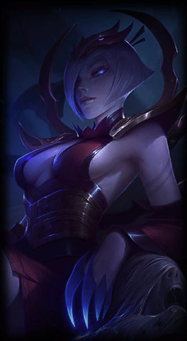
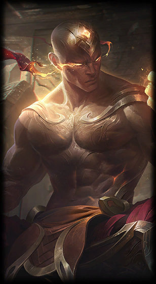

Biography
After spending time playing Warcraft 3 and DOTA, Jankos decided to take up League of Legends in Season 1. Due to the fact that he began playing on the NA server from his native Poland, he could not play competitively for a considerable time. After praise and encouragement from IWillDominate, Jankos decided to start playing on the EU server along with his friends.
Season 3
After impressing in soloqueue, Jankos soon found himself on the roster of Team Mistral. The team went on to place 3rd at the LCS Summer Promotion Qualifier - Lille. Soon after this, Jankos was picked up by GF-Gaming along with the rest of the Team Mistral roster. After success in a number of Go4LoL tournaments, Jankos went on to join H2k-Gaming, where he met Overpow and VandeR. Soon after joining H2k, Jankos and his new team won DreamHack Bucharest 2013, beating the Copenhagen Wolves in the final. The team also managed to qualify for the Spring Promotion via the 1st WellPlayed Qualifier. The roster was then picked up by GF-Gaming, Jankos' former team, but was released just a week later. The team decided to reform as Kiedyś Miałem Team, and went on to finish 2nd at DreamHack Winter 2013. Jankos and the team participated in the Spring Promotion using the spot they had earned with with H2k. The team finished 3rd in their group, and went on to win their promotion matchup against Ninjas in Pyjamas.
Season 4
Now with a spot in the upcoming Spring Split, Jankos and the rest of the roster were signed by Team ROCCAT. The team's first split in the LCS was a huge success. ROCCAT spent 3 weeks at the top of the standings table mid-split, but results tailed off slightly towards the end of the split. The team ended up finishing 4th behind Alliance, securing themselves a spot in the Spring Playoffs. ROCCAT performed well in the Spring Playoffs, but lost to SK Gaming in the semifinals. The team went on to finish in 3rd place after beating Alliance in the third-place match. The Summer Split was a struggle for ROCCAT, with the team not once making it out of the bottom 3 of the standings table. A frustrating few weeks at the start of the split were followed by an overall improvement in the team's performances. Jankos managed to pick up a weekly MVP award for Week 8, specifically for his performances on Lee SinSquare.png Lee Sin and ViSquare.png Vi against SK Gaming and Alliance respectively. Despite their struggles, ROCCAT placed 6th overall, clinching a place at the Summer Playoffs. The playoffs saw the team raise their game considerably. A quarterfinal win over SUPA HOT CREW resulted in a semifinal matchup against Fnatic. The series was unexpectedly tight, with ROCCAT coming close but eventually losing 3-2 and missing out on qualification for the World Championship. A third-place match loss against SK Gaming meant that ROCCAT finished 4th overall.
Season 5
Due to Fnatic being unable to attend IEM Cologne, Jankos and ROCCAT took their place at the tournament. The team were knocked out in the semifinals, losing to Counter Logic Gaming. Jankos and the team had an unsuccessful LCS Spring Split, finishing the regular season in 8th place, which meant that they would play in the Summer Promotion. Here, the team faced Copenhagen Wolves Academy and came out victorious, securing their spot in the Summer Split. The Summer Split itself was far more successful for Jankos and the team, finishing the regular season in 5th place partly thanks to Jankos' impressive performances on a number of champions. This meant they would qualify for the Summer Playoffs, where the team were beaten in the quarterfinals by Unicorns Of Love, meaning that they would pick up 20 Championship Points and go on to play in the 2015 Season Europe Regional Finals. Team ROCCAT went on to lose to eventual qualifiers Origen in Round 2 of the gauntlet.
Season 6
At the start of the season, Jankos joined H2k-Gaming after the team were voted to play at IEM Season X - Cologne. They fielded a roster including Odoamne and Ryu from their 2015 roster along with new members Jankos, FORG1VEN, and VandeR. The team beat Cloud9 in the quarterfinals but were then beaten themselves by eventual winners Ever in the semifinals of the tournament.
Trivia
- His ID Jankos is based on his surname (Jankowski).
- Wanted to be a teacher when he was younger.
- Hates Riven.
- The three Lord of The Rings movies are his favorites.
- Identifies Chuck Norris as his role model.
- Played 336 competitive games before achieving his first title in 2019 Spring Split, which is record for most games played without a title in Europe.
- Nicknamed "The First Blood King" during his time on H2k.
- Often complains semi-seriously in interviews about his G2 teammates forcing him to pick passive, tank junglers to support their aggressive carry play.
- Reached 1000 kills in the LEC on September 8, 2019.
- The 2nd player to reach 1000 kills in the LEC after Rekkles.
- His 1000th kill was on Fnatic's Hylissang in the LEC 2019 Summer Finals with Jarvan IV.
- Reached 2500 Assists in the LEC on February 14, 2020.
- The 2nd player to reach 2500 assists in the LEC after Hylissang.
- His 2500th assist was for Perkz's kill on Misfits Gaming's bot laner Bvoy in the with Gragas.
- Became the first player to reach both 1000 kills and 2500 assists in the LEC on February 14, 2020.
| Jankos | ||
|---|---|---|
|
1 / 3

Jankos
2 / 3

Elise
3 / 3

Lee Sin
|
||
| Background Information | ||
| Name | Marcin Jankowski | |
| Country of Birth | Poland | |
| Birthday | July 23, 1995 (age 24) | |
| Residency |
EU
Europe |
|
| Competitive | ||
| Team | G2 Esports | |
| Role | Jungler | |
| Soloqueue IDs | EUW: Polish Wonderb0y, G2 Jerkz, llIlllllIIllllll EUNE: Jankoss NA: H2K Jankosovich KR: G2 Jankos, Giang Van Cot VN: Giang Van Cot |
|
| Social Media & Links | ||
|
||